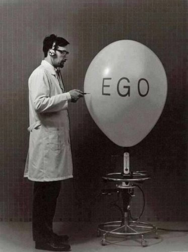

--Jed McKenna
Hey everybody, time to get rid of ego!
Time to finally reach that desirable egoless state you’ve all heard so much about, and make sure you stay there permanently.
Only then will you have arrived. Only then will you be able to have a good, right life. Only then will you be done with seeking, improving, enlightening, journeying.
Until then there's more work to do.
So in ever-helpful Mind-Tickler fashion, here's a little pop quiz to monitor your progress along the path.
1- What is it that wants to get rid of ego?
2- What says doing so is a worthwhile goal? What says it's even a possiblegoal?
3- What makes ego go away?
4- Where does it go to, once kicked out?
5- What remains behind after ego is gone?
6- What knows it’s gone?
7- If, heaven forbid, ego comes back, what knows that? How does it know that?
So there you go, my friends.
A few little questions to help clear things up.
You're welcome.
Today’s talk has been brought to you by...
well,
definitely not ego.
